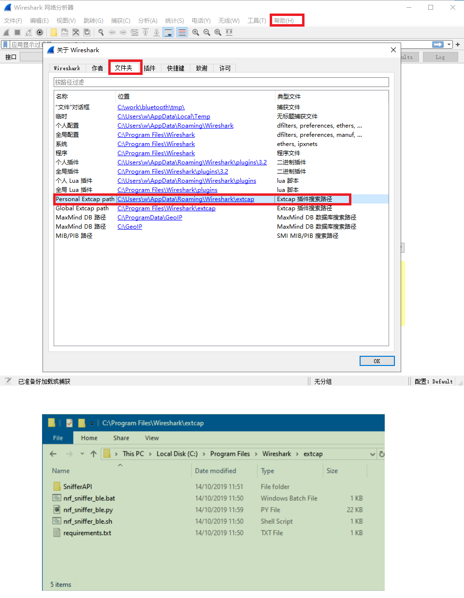
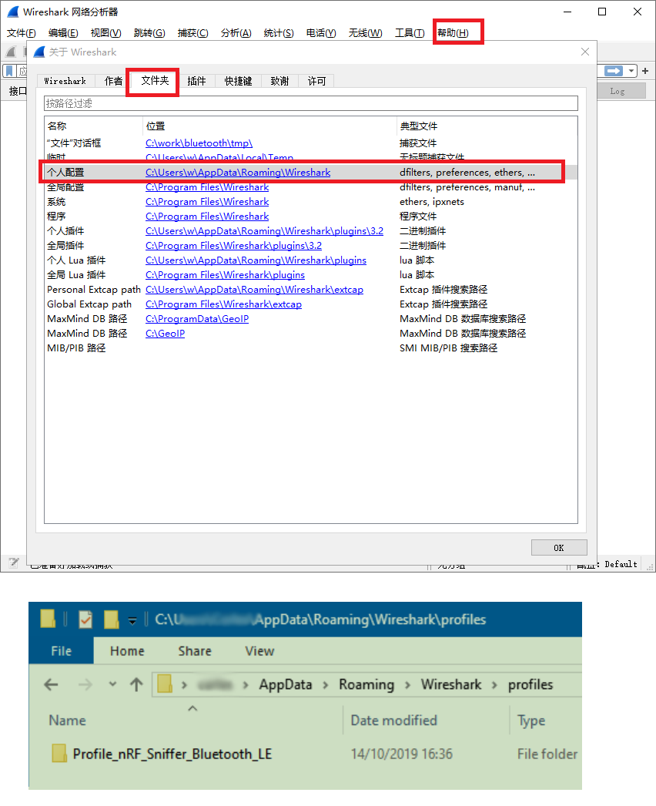
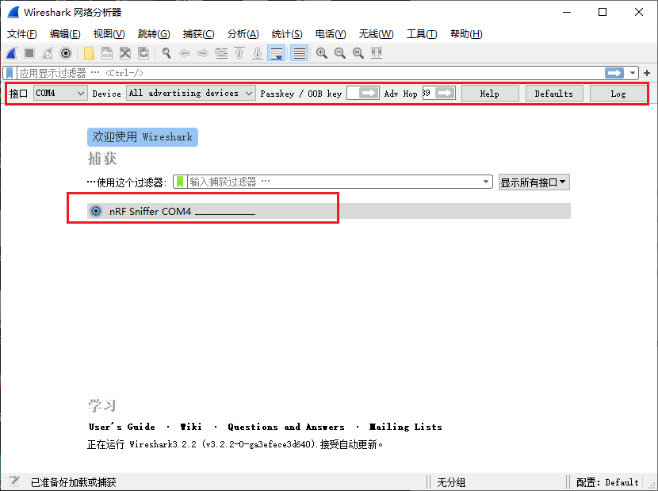

在做BLE开发中，经常需要抓蓝牙通信包来分析。
专业的蓝牙抓包工具非常昂贵，我们可以使用Nordic的开发板来进行抓包
还可以使用nRF Connect APP进行简单抓包
1 硬件
Nordic nRF52 开发板 PCA10040
2 软件
- Wireshark v2.4.6 以上 https://www.wireshark.org/
- Python v3.6 以上 https://www.python.org/downloads/
- nRF Sniffer for Bluetooth LE v3.x 以上 Sniffer_Software
3 安装
3.1 更新硬件固件
将Sniffer_Software/hex/sniffer_pca10040_129d2b3.hex下载到开发板PCA10040中
3.2 配置Wireshark环境
蓝牙嗅探功能是以插件形式安装到Wireshark中.
3.2.1 安装pyserial
cmd命令行进入Sniffer_Software/extcap/ 执行命令 pip3 install -r requirements.txt
3.2.2 拷贝工具到Wireshark
将Sniffer_Software/extcap/中的所有内容拷贝到Wireshark的extcap文件夹中.位置在帮助-->关于Wireshark中,如下图:

3.2.3 开启插件
在Wireshark中按F5刷新下，然后在菜单中使能新装的插件: 视图 --> 接口工具 --> nRF Sniffer for Bluetooth LE
3.2.4 添加配置文件
添加配置文件以便更清晰的显示数据
将Sniffer_Software/Profile_nRF_Sniffer_Bluetooth_LE整个文件夹拷贝到Wireshark的个人配置文件夹中.
启用Edit > Configuration Profiles > Profile_nRF_Sniffer_Bluetooth_LE > OK

4. 运行
双击接口即可进入抓包界面，从Device选择框内选择要监听的设备即可只显示该设备的数据包
